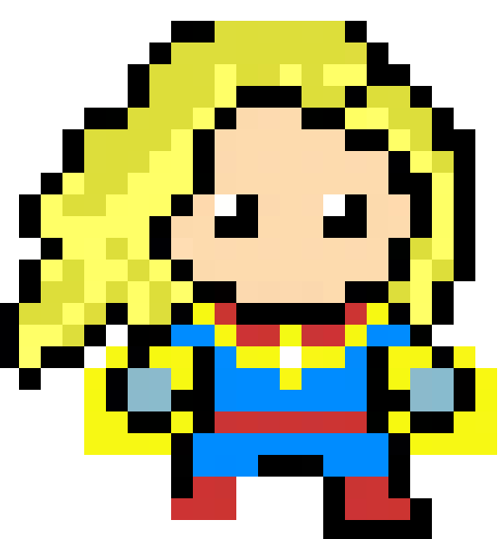

DIJKSTRA'S SHORTEST PATH ALGORITHM
01. S.H.I.E.L.D. MISSION BRIEFING // OP-MARVEL-17 KREE ARMADA RELAY INTERCEPTION
02. FORMAL PROBLEM SPECIFICATION & INVARIANTS ACADEMIC CURRICULUM
Dijkstra's Algorithm, designed by Edsger W. Dijkstra in 1956, solves the Single-Source Shortest Path (SSSP) problem on a weighted, directed or undirected graph \(G = (V, E)\) with a fundamental constraint: all edge weights must be non-negative (\( orall e \in E, w(e) \ge 0\)).
Given a source vertex \(s \in V\), the algorithm computes the minimum path distance \(d[v]\) from \(s\) to every vertex \(v \in V\).
Core Algorithmic Invariant (Edge Relaxation):
\[ ext{If } d[u] + w(u, v) < d[v] \implies d[v] = d[u] + w(u, v) \]Greedy Execution Loop:
- Initialize tentative distances: \(d[s] = 0\) and \(d[v] = \infty\) for all \(v e s\). Maintain a set \(S\) of finalized vertices (initially empty).
- Extract the vertex \(u otin S\) with the minimum tentative distance \(d[u]\) using a Min-Priority Queue.
- Add \(u\) to finalized set \(S\). The distance \(d[u]\) is now mathematically guaranteed to be the true shortest path distance!
- Relax all outgoing edges \((u, v)\): if \(d[u] + w(u, v) < d[v]\), update \(d[v]\) and decrease key in priority queue.
- Repeat until all reachable vertices are finalized.
03. BRUTE FORCE VS ALGORITHMIC OPTIMALITY STRATEGIC COMPARISON
Why does Dijkstra require non-negative weights? The greedy choice assumes that once a vertex \(u\) is extracted with minimum distance, its distance can never be decreased by traveling through another unvisited vertex. If negative edges exist, this invariant collapses completely: a longer preliminary path could later encounter a massive negative edge (e.g. \(-50\)) and become shorter, causing Dijkstra to return incorrect answers. Graphs with negative weights require the Bellman-Ford Algorithm (\(O(V \cdot E)\)).
Greedy invariant violated.
Premature finalization locks incorrect distance.
Requires Bellman-Ford \(O(VE)\) to handle negative cycles.
Monotonically increasing path lengths.
Min-Heap extracts guaranteed optimal vertex.
Blazing fast: \(O((V + E) \log V)\).
04. MATHEMATICAL PROOFS & RECURRENCES KATEX FORMULATION
Triangle Inequality Invariant: For all edges \((u, v) \in E\), the true shortest path distances \(\delta(s, v)\) satisfy:
\[ \delta(s, v) \le \delta(s, u) + w(u, v) \]Complexity Derivation:
- Total
Insertoperations into Priority Queue: \(|V|\). - Total
Extract-Minoperations: \(|V|\), each taking \(O(\log V)\). Total = \(O(V \log V)\). - Total
Decrease-Key/ edge relaxations: \(|E|\), each taking \(O(\log V)\). Total = \(O(E \log V)\). - Total Time with Binary Heap: \(O((V + E) \log V)\).
- Total Time with Fibonacci Heap: \(O(V \log V + E \cdot 1) = O(E + V \log V)\).
05. STEP-BY-STEP WORKED CALCULATION EXAMPLE NUMERICAL TRACE
Worked Example: Find shortest paths from source \(S\) on graph with vertices \(\{S, A, B, C, D\}\):
- Edges: \((S, A): 10, (S, C): 5, (A, B): 1, (C, A): 3, (C, B): 9, (C, D): 2, (D, B): 4, (B, D): 6\).
- Initial State: \(d[S]=0\), all others \(\infty\). Priority Queue: \([(0, S)]\).
- Extract \(S\) (\(d=0\)):
Relax \((S, A): 0 + 10 = 10 < \infty \implies d[A] = 10\).
Relax \((S, C): 0 + 5 = 5 < \infty \implies d[C] = 5\).
Queue: \([(5, C), (10, A)]\). Finalized: \(\{S\}\). - Extract \(C\) (\(d=5\)):
Relax \((C, A): 5 + 3 = 8 < 10 \implies d[A] = 8\) (Shorter path to A via C!).
Relax \((C, B): 5 + 9 = 14 < \infty \implies d[B] = 14\).
Relax \((C, D): 5 + 2 = 7 < \infty \implies d[D] = 7\).
Queue: \([(7, D), (8, A), (14, B)]\). Finalized: \(\{S, C\}\). - Extract \(D\) (\(d=7\)):
Relax \((D, B): 7 + 4 = 11 < 14 \implies d[B] = 11\).
Queue: \([(8, A), (11, B)]\). Finalized: \(\{S, C, D\}\). - Extract \(A\) (\(d=8\)):
Relax \((A, B): 8 + 1 = 9 < 11 \implies d[B] = 9\).
Queue: \([(9, B)]\). Finalized: \(\{S, C, D, A\}\). - Extract \(B\) (\(d=9\)):
Finalized: \(\{S, C, D, A, B\}\).
Final Shortest Distances from S: \(S: 0, A: 8, B: 9, C: 5, D: 7\). Paths reconstructed via predecessors!
06. RETRO PHYSICAL GAME SIMULATION & YOUR CUSTOM INPUTS LIVE SIMULATION CONSOLE
Watch Captain Marvel channel photon beams across interstellar jumpgates to compute shortest paths.
07. ASYMPTOTIC COMPLEXITY DERIVATION MATRIX DAA BIG-O BOUNDS
| OPERATION / CASE | ASYMPTOTIC BOUND | SPACE / FOOTPRINT | MATHEMATICAL INVARIANT |
|---|---|---|---|
| Binary Heap Implementation | O((V + E) log V) | O(V) space | Standard competitive programming implementation |
| Fibonacci Heap Implementation | O(E + V log V) | O(V) space | Theoretical optimal bound with O(1) amortized decrease-key |
| Array / Matrix Implementation | O(V^2) | O(V) space | Optimal on dense graphs where E approx V^2 |
| Bellman-Ford (Negative Weights) | O(V * E) | O(V) space | Handles negative weights and detects negative cycles |
| Floyd-Warshall (All-Pairs) | O(V^3) | O(V^2) space | Dynamic programming for all-pairs shortest paths |
08. ASYMPTOTIC GROWTH COMPARISON LIVE CALCULATOR
Drag the input size slider \(n\) to observe step counts diverge across complexity classes in real-time:
09. PRACTICAL SYSTEMS DESIGN & REFERENCE IMPLEMENTATION PRODUCTION ARCHITECTURE
1. GPS & Google Maps Routing: Real-world map navigation systems use advanced variants of Dijkstra: the A* Search Algorithm (which augments Dijkstra with a Euclidean distance heuristic function \(h(v)\) to direct the search cone toward the destination) and Contraction Hierarchies for sub-millisecond continental queries.
2. Network Routing Protocols (OSPF & IS-IS): The Open Shortest Path First (OSPF) protocol running in global internet routers executes Dijkstra's algorithm inside every router to build the shortest-path forwarding table for IP packet routing.
3. Early Exit Optimization: When looking for the shortest path between a specific start and destination pair (point-to-point SSSP), the loop can terminate immediately the moment the destination vertex is extracted from the priority queue!
import heapq
def dijkstra_shortest_path(graph: dict, source: str) -> tuple[dict, dict]:
"""
Dijkstra's SSSP Algorithm with Min-Heap priority queue.
graph: dict mapping vertex -> list of (neighbor, weight).
Time Complexity: O((V + E) log V), Space: O(V).
"""
distances = {v: float('inf') for v in graph}
predecessors = {v: None for v in graph}
distances[source] = 0.0
# Priority Queue stores tuples of (distance, vertex)
pq = [(0.0, source)]
visited = set()
while pq:
curr_dist, u = heapq.heappop(pq)
if u in visited:
continue
visited.add(u)
# Edge relaxation
for v, weight in graph[u]:
if curr_dist + weight < distances[v]:
distances[v] = curr_dist + weight
predecessors[v] = u
heapq.heappush(pq, (distances[v], v))
return distances, predecessors10. MISSION ASSESSMENT // TEST YOUR MASTERY
Test your mastery of DIJKSTRA'S SHORTEST PATH ALGORITHM with these university exam questions:
11. S.H.I.E.L.D. DEBRIEF & KEY EXAM TAKEAWAYS REVISION CHECKLIST
Dijkstra's algorithm finds single-source shortest paths on graphs with non-negative weights in O((V + E) log V) time. It is the cornerstone of GPS routing and Internet packet navigation.